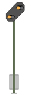
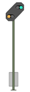

|
|
| You are approaching the Distant Signal for the Entry Signal of the Altenbeken station. One of three different Signal Aspects can be expected (because of the location in the Tunnel you will of course see only the lamps. These are also displaced a little due to the tight fit in the Tunnel): |
 In approximately 1000m the next Main Signal is at Stop:Immediately after passing the Distant Signal, press the Indusi-Alert (Enter-Key in Numeric Keypad).
The yellow 1000Hz Light must illuminate. |
 In approximately 1000m the next Main Signal is displaying Proceed at Reduced Speed (40km/h):Immediately after passing the Distant Signal, press the Indusi-Alert (Enter-Key in Numeric Keypad). The yellow 1000Hz Light must illuminate. |
 In approximately 1000m the next
Main Signal is displaying Proceed: In approximately 1000m the next
Main Signal is displaying Proceed: You may contine at Line Speed (in this case, 80km/h). |